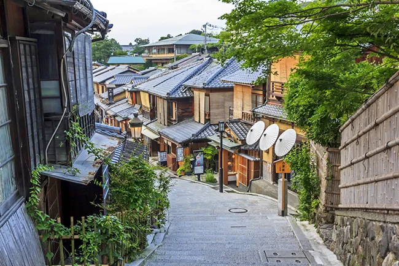

Site sobre Quioto
Este projeto combina tecnologias de front-end com a cultura de Quioto, Japão.
Ele apresenta diversos tópicos sobre essa fascinante cidade japonesa, incluindo informações, quizzes, formulários e muito mais.
24 Set, 2024